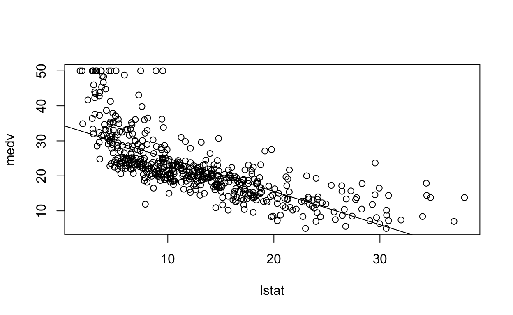
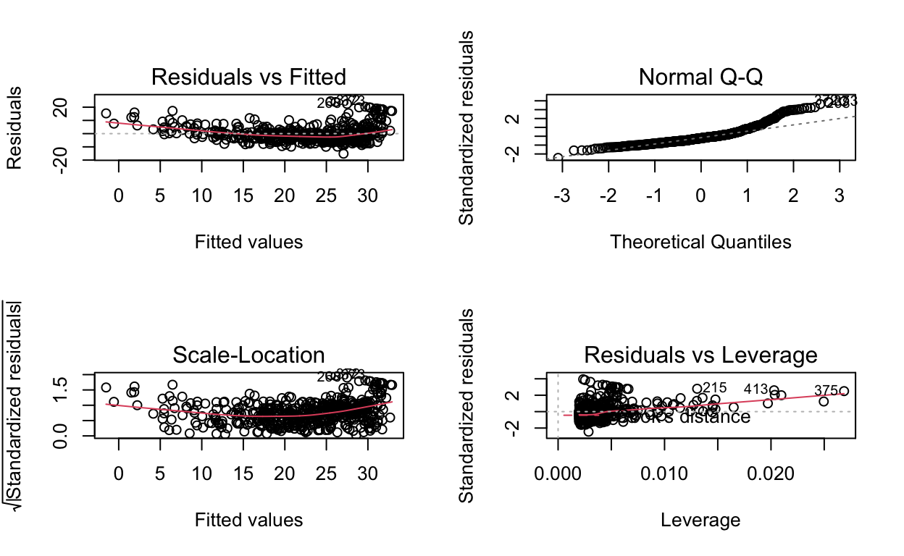

> Academics > MS797 > Useful R tidbits
This document contains R snippets pertaining to work in the Machine Learning class. There is also one for the Social Networks class.
Most of this comes directly from the resources from the 2nd edition of ISLR, either direct quotes or things that build on them. The Lab section of each chapter contains useful walkthroughs and code illustrating the chapter’s key concepts, and there’s always something to learn about R and how different people use it.
Everything here is, unless otherwise marked, either the work of, or derivative of the work of, the original authors of the book.
Chapter 3: Linear Regression
names(): see the attributes of a model
names() is a nice, simple way to see the attributes of a linear model:
[1] "coefficients" "residuals" "effects" "rank"
[5] "fitted.values" "assign" "qr" "df.residual"
[9] "xlevels" "call" "terms" "model" coef(): see the model’s coefficients
coef() is a convenient way to get the coefficients attribute:
(Intercept) lstat
34.5538409 -0.9500494 Note: this is equivalent to lm.fit$coefficients, but slightly easier on the eyes.
confint(): see confidence intervals for a model
2.5 % 97.5 %
(Intercept) 33.448457 35.6592247
lstat -1.026148 -0.8739505Note: levels can be added with the level parameter (the default is 0.95):
5 % 95 %
(Intercept) 33.626697 35.4809847
lstat -1.013877 -0.8862212predict(): see confidence OR prediction intervals for a model
fit lwr upr
1 29.80359 29.00741 30.59978
2 25.05335 24.47413 25.63256
3 20.30310 19.73159 20.87461 fit lwr upr
1 29.80359 17.565675 42.04151
2 25.05335 12.827626 37.27907
3 20.30310 8.077742 32.52846Note: prediction intervals are defined on p. 82; in brief, it is the interval in which we are \(X\)% certain that any future observation will fall.
Note: the data.frame() call in the above parameter lists produce a nifty little data frame that is used by predict to identify the column to do calculations on, and the desired levels:
lstat
1 5
2 10
3 15Note: the book uses the base R graphics:

The tidyverse/ggplot version of this is:

…a bit more work, but more modern.
arranging plots in grids
The book uses base R, again, with par() and mfrow() to arrange plots:

ggplot uses facet() to arrange plots from the same data set in grids.
Plots from different data sets need additional packages to be combined; one option is the cowplot library and the plot_grid() function.
EVERYTHING BELOW THIS LINE
is direct paste from the book’s sources which I have not yet written in my own words or added anything to. Stay tuned.
Alternatively, we can compute the residuals from a linear regression fit using the residuals() function. The function rstudent() will return the studentized residuals, and we can use this function to plot the residuals against the fitted values.
On the basis of the residual plots, there is some evidence of non-linearity. Leverage statistics can be computed for any number of predictors using the hatvalues() function.

375
375 The which.max() function identifies the index of the largest element of a vector. In this case, it tells us which observation has the largest leverage statistic.
Multiple Linear Regression
In order to fit a multiple linear regression model using least squares, we again use the lm() function. The syntax lm(y ~ x1 + x2 + x3) is used to fit a model with three predictors, x1, x2, and x3. The summary() function now outputs the regression coefficients for all the predictors.
Call:
lm(formula = medv ~ lstat + age, data = Boston)
Residuals:
Min 1Q Median 3Q Max
-15.981 -3.978 -1.283 1.968 23.158
Coefficients:
Estimate Std. Error t value Pr(>|t|)
(Intercept) 33.22276 0.73085 45.458 < 2e-16 ***
lstat -1.03207 0.04819 -21.416 < 2e-16 ***
age 0.03454 0.01223 2.826 0.00491 **
---
Signif. codes: 0 '***' 0.001 '**' 0.01 '*' 0.05 '.' 0.1 ' ' 1
Residual standard error: 6.173 on 503 degrees of freedom
Multiple R-squared: 0.5513, Adjusted R-squared: 0.5495
F-statistic: 309 on 2 and 503 DF, p-value: < 2.2e-16The Boston data set contains 12 variables, and so it would be cumbersome to have to type all of these in order to perform a regression using all of the predictors. Instead, we can use the following short-hand:
Call:
lm(formula = medv ~ ., data = Boston)
Residuals:
Min 1Q Median 3Q Max
-15.1304 -2.7673 -0.5814 1.9414 26.2526
Coefficients:
Estimate Std. Error t value Pr(>|t|)
(Intercept) 41.617270 4.936039 8.431 3.79e-16 ***
crim -0.121389 0.033000 -3.678 0.000261 ***
zn 0.046963 0.013879 3.384 0.000772 ***
indus 0.013468 0.062145 0.217 0.828520
chas 2.839993 0.870007 3.264 0.001173 **
nox -18.758022 3.851355 -4.870 1.50e-06 ***
rm 3.658119 0.420246 8.705 < 2e-16 ***
age 0.003611 0.013329 0.271 0.786595
dis -1.490754 0.201623 -7.394 6.17e-13 ***
rad 0.289405 0.066908 4.325 1.84e-05 ***
tax -0.012682 0.003801 -3.337 0.000912 ***
ptratio -0.937533 0.132206 -7.091 4.63e-12 ***
lstat -0.552019 0.050659 -10.897 < 2e-16 ***
---
Signif. codes: 0 '***' 0.001 '**' 0.01 '*' 0.05 '.' 0.1 ' ' 1
Residual standard error: 4.798 on 493 degrees of freedom
Multiple R-squared: 0.7343, Adjusted R-squared: 0.7278
F-statistic: 113.5 on 12 and 493 DF, p-value: < 2.2e-16We can access the individual components of a summary object by name (type ?summary.lm to see what is available). Hence summary(lm.fit)$r.sq gives us the \(R^2\), and summary(lm.fit)$sigma gives us the RSE. The vif() function, part of the car package, can be used to compute variance inflation factors. Most VIF’s are low to moderate for this data. The car package is not part of the base R installation so it must be downloaded the first time you use it via the install.packages() function in R.
crim zn indus chas nox rm age
1.767486 2.298459 3.987181 1.071168 4.369093 1.912532 3.088232
dis rad tax ptratio lstat
3.954037 7.445301 9.002158 1.797060 2.870777 What if we would like to perform a regression using all of the variables but one? For example, in the above regression output, age has a high \(p\)-value. So we may wish to run a regression excluding this predictor. The following syntax results in a regression using all predictors except age.
Call:
lm(formula = medv ~ . - age, data = Boston)
Residuals:
Min 1Q Median 3Q Max
-15.1851 -2.7330 -0.6116 1.8555 26.3838
Coefficients:
Estimate Std. Error t value Pr(>|t|)
(Intercept) 41.525128 4.919684 8.441 3.52e-16 ***
crim -0.121426 0.032969 -3.683 0.000256 ***
zn 0.046512 0.013766 3.379 0.000785 ***
indus 0.013451 0.062086 0.217 0.828577
chas 2.852773 0.867912 3.287 0.001085 **
nox -18.485070 3.713714 -4.978 8.91e-07 ***
rm 3.681070 0.411230 8.951 < 2e-16 ***
dis -1.506777 0.192570 -7.825 3.12e-14 ***
rad 0.287940 0.066627 4.322 1.87e-05 ***
tax -0.012653 0.003796 -3.333 0.000923 ***
ptratio -0.934649 0.131653 -7.099 4.39e-12 ***
lstat -0.547409 0.047669 -11.483 < 2e-16 ***
---
Signif. codes: 0 '***' 0.001 '**' 0.01 '*' 0.05 '.' 0.1 ' ' 1
Residual standard error: 4.794 on 494 degrees of freedom
Multiple R-squared: 0.7343, Adjusted R-squared: 0.7284
F-statistic: 124.1 on 11 and 494 DF, p-value: < 2.2e-16Alternatively, the update() function can be used.
Interaction Terms
It is easy to include interaction terms in a linear model using the lm() function. The syntax lstat:black tells R to include an interaction term between lstat and black. The syntax lstat * age simultaneously includes lstat, age, and the interaction term lstat\(\times\)age as predictors; it is a shorthand for lstat + age + lstat:age.
Call:
lm(formula = medv ~ lstat * age, data = Boston)
Residuals:
Min 1Q Median 3Q Max
-15.806 -4.045 -1.333 2.085 27.552
Coefficients:
Estimate Std. Error t value Pr(>|t|)
(Intercept) 36.0885359 1.4698355 24.553 < 2e-16 ***
lstat -1.3921168 0.1674555 -8.313 8.78e-16 ***
age -0.0007209 0.0198792 -0.036 0.9711
lstat:age 0.0041560 0.0018518 2.244 0.0252 *
---
Signif. codes: 0 '***' 0.001 '**' 0.01 '*' 0.05 '.' 0.1 ' ' 1
Residual standard error: 6.149 on 502 degrees of freedom
Multiple R-squared: 0.5557, Adjusted R-squared: 0.5531
F-statistic: 209.3 on 3 and 502 DF, p-value: < 2.2e-16Non-linear Transformations of the Predictors
The lm() function can also accommodate non-linear transformations of the predictors. For instance, given a predictor \(X\), we can create a predictor \(X^2\) using I(X^2). The function I() is needed since the ^ has a special meaning in a formula object; wrapping as we do allows the standard usage in R, which is to raise X to the power 2. We now perform a regression of medv onto lstat and lstat^2.
Call:
lm(formula = medv ~ lstat + I(lstat^2))
Residuals:
Min 1Q Median 3Q Max
-15.2834 -3.8313 -0.5295 2.3095 25.4148
Coefficients:
Estimate Std. Error t value Pr(>|t|)
(Intercept) 42.862007 0.872084 49.15 <2e-16 ***
lstat -2.332821 0.123803 -18.84 <2e-16 ***
I(lstat^2) 0.043547 0.003745 11.63 <2e-16 ***
---
Signif. codes: 0 '***' 0.001 '**' 0.01 '*' 0.05 '.' 0.1 ' ' 1
Residual standard error: 5.524 on 503 degrees of freedom
Multiple R-squared: 0.6407, Adjusted R-squared: 0.6393
F-statistic: 448.5 on 2 and 503 DF, p-value: < 2.2e-16The near-zero \(p\)-value associated with the quadratic term suggests that it leads to an improved model. We use the anova() function to further quantify the extent to which the quadratic fit is superior to the linear fit.
Analysis of Variance Table
Model 1: medv ~ lstat
Model 2: medv ~ lstat + I(lstat^2)
Res.Df RSS Df Sum of Sq F Pr(>F)
1 504 19472
2 503 15347 1 4125.1 135.2 < 2.2e-16 ***
---
Signif. codes: 0 '***' 0.001 '**' 0.01 '*' 0.05 '.' 0.1 ' ' 1Here Model 1 represents the linear submodel containing only one predictor, lstat, while Model 2 corresponds to the larger quadratic model that has two predictors, lstat and lstat^2. The anova() function performs a hypothesis test comparing the two models. The null hypothesis is that the two models fit the data equally well, and the alternative hypothesis is that the full model is superior. Here the \(F\)-statistic is \(135\) and the associated \(p\)-value is virtually zero. This provides very clear evidence that the model containing the predictors lstat and lstat^2 is far superior to the model that only contains the predictor lstat. This is not surprising, since earlier we saw evidence for non-linearity in the relationship between medv and lstat. If we type

then we see that when the lstat^2 term is included in the model, there is little discernible pattern in the residuals.
In order to create a cubic fit, we can include a predictor of the form I(X^3). However, this approach can start to get cumbersome for higher-order polynomials. A better approach involves using the poly() function to create the polynomial within lm(). For example, the following command produces a fifth-order polynomial fit:
Call:
lm(formula = medv ~ poly(lstat, 5))
Residuals:
Min 1Q Median 3Q Max
-13.5433 -3.1039 -0.7052 2.0844 27.1153
Coefficients:
Estimate Std. Error t value Pr(>|t|)
(Intercept) 22.5328 0.2318 97.197 < 2e-16 ***
poly(lstat, 5)1 -152.4595 5.2148 -29.236 < 2e-16 ***
poly(lstat, 5)2 64.2272 5.2148 12.316 < 2e-16 ***
poly(lstat, 5)3 -27.0511 5.2148 -5.187 3.10e-07 ***
poly(lstat, 5)4 25.4517 5.2148 4.881 1.42e-06 ***
poly(lstat, 5)5 -19.2524 5.2148 -3.692 0.000247 ***
---
Signif. codes: 0 '***' 0.001 '**' 0.01 '*' 0.05 '.' 0.1 ' ' 1
Residual standard error: 5.215 on 500 degrees of freedom
Multiple R-squared: 0.6817, Adjusted R-squared: 0.6785
F-statistic: 214.2 on 5 and 500 DF, p-value: < 2.2e-16This suggests that including additional polynomial terms, up to fifth order, leads to an improvement in the model fit! However, further investigation of the data reveals that no polynomial terms beyond fifth order have significant \(p\)-values in a regression fit.
By default, the poly() function orthogonalizes the predictors: this means that the features output by this function are not simply a sequence of powers of the argument. However, a linear model applied to the output of the poly() function will have the same fitted values as a linear model applied to the raw polynomials (although the coefficient estimates, standard errors, and p-values will differ). In order to obtain the raw polynomials from the poly() function, the argument raw = TRUE must be used.
Of course, we are in no way restricted to using polynomial transformations of the predictors. Here we try a log transformation.
Call:
lm(formula = medv ~ log(rm), data = Boston)
Residuals:
Min 1Q Median 3Q Max
-19.487 -2.875 -0.104 2.837 39.816
Coefficients:
Estimate Std. Error t value Pr(>|t|)
(Intercept) -76.488 5.028 -15.21 <2e-16 ***
log(rm) 54.055 2.739 19.73 <2e-16 ***
---
Signif. codes: 0 '***' 0.001 '**' 0.01 '*' 0.05 '.' 0.1 ' ' 1
Residual standard error: 6.915 on 504 degrees of freedom
Multiple R-squared: 0.4358, Adjusted R-squared: 0.4347
F-statistic: 389.3 on 1 and 504 DF, p-value: < 2.2e-16Qualitative Predictors
We will now examine the Carseats data, which is part of the ISLR2 library. We will attempt to predict Sales (child car seat sales) in \(400\) locations based on a number of predictors.
Sales CompPrice Income Advertising Population Price ShelveLoc Age
1 9.50 138 73 11 276 120 Bad 42
2 11.22 111 48 16 260 83 Good 65
3 10.06 113 35 10 269 80 Medium 59
4 7.40 117 100 4 466 97 Medium 55
5 4.15 141 64 3 340 128 Bad 38
6 10.81 124 113 13 501 72 Bad 78
Education Urban US
1 17 Yes Yes
2 10 Yes Yes
3 12 Yes Yes
4 14 Yes Yes
5 13 Yes No
6 16 No YesThe Carseats data includes qualitative predictors such as shelveloc, an indicator of the quality of the shelving location—that is, the space within a store in which the car seat is displayed—at each location. The predictor shelveloc takes on three possible values: Bad, Medium, and Good. Given a qualitative variable such as shelveloc, R generates dummy variables automatically. Below we fit a multiple regression model that includes some interaction terms.
Call:
lm(formula = Sales ~ . + Income:Advertising + Price:Age, data = Carseats)
Residuals:
Min 1Q Median 3Q Max
-2.9208 -0.7503 0.0177 0.6754 3.3413
Coefficients:
Estimate Std. Error t value Pr(>|t|)
(Intercept) 6.5755654 1.0087470 6.519 2.22e-10 ***
CompPrice 0.0929371 0.0041183 22.567 < 2e-16 ***
Income 0.0108940 0.0026044 4.183 3.57e-05 ***
Advertising 0.0702462 0.0226091 3.107 0.002030 **
Population 0.0001592 0.0003679 0.433 0.665330
Price -0.1008064 0.0074399 -13.549 < 2e-16 ***
ShelveLocGood 4.8486762 0.1528378 31.724 < 2e-16 ***
ShelveLocMedium 1.9532620 0.1257682 15.531 < 2e-16 ***
Age -0.0579466 0.0159506 -3.633 0.000318 ***
Education -0.0208525 0.0196131 -1.063 0.288361
UrbanYes 0.1401597 0.1124019 1.247 0.213171
USYes -0.1575571 0.1489234 -1.058 0.290729
Income:Advertising 0.0007510 0.0002784 2.698 0.007290 **
Price:Age 0.0001068 0.0001333 0.801 0.423812
---
Signif. codes: 0 '***' 0.001 '**' 0.01 '*' 0.05 '.' 0.1 ' ' 1
Residual standard error: 1.011 on 386 degrees of freedom
Multiple R-squared: 0.8761, Adjusted R-squared: 0.8719
F-statistic: 210 on 13 and 386 DF, p-value: < 2.2e-16The contrasts() function returns the coding that R uses for the dummy variables.
Good Medium
Bad 0 0
Good 1 0
Medium 0 1Use ?contrasts to learn about other contrasts, and how to set them.
R has created a ShelveLocGood dummy variable that takes on a value of 1 if the shelving location is good, and 0 otherwise. It has also created a ShelveLocMedium dummy variable that equals 1 if the shelving location is medium, and 0 otherwise. A bad shelving location corresponds to a zero for each of the two dummy variables. The fact that the coefficient for ShelveLocGood in the regression output is positive indicates that a good shelving location is associated with high sales (relative to a bad location). And ShelveLocMedium has a smaller positive coefficient, indicating that a medium shelving location is associated with higher sales than a bad shelving location but lower sales than a good shelving location.